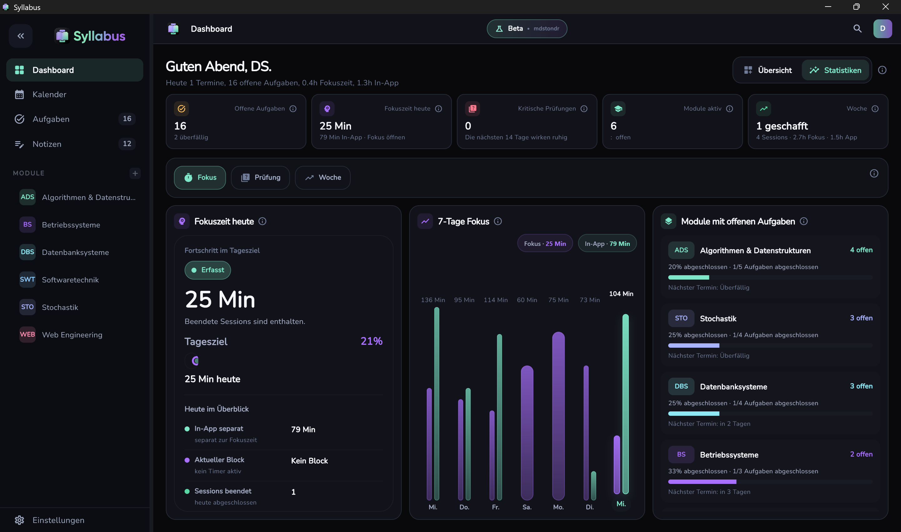
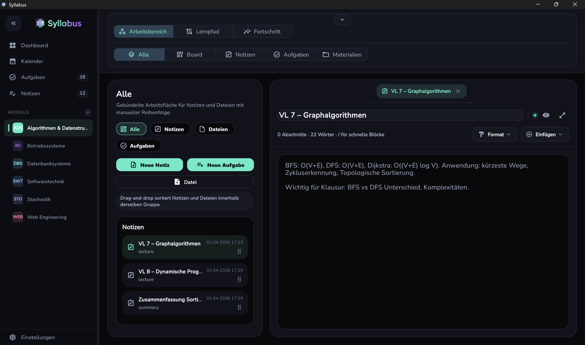
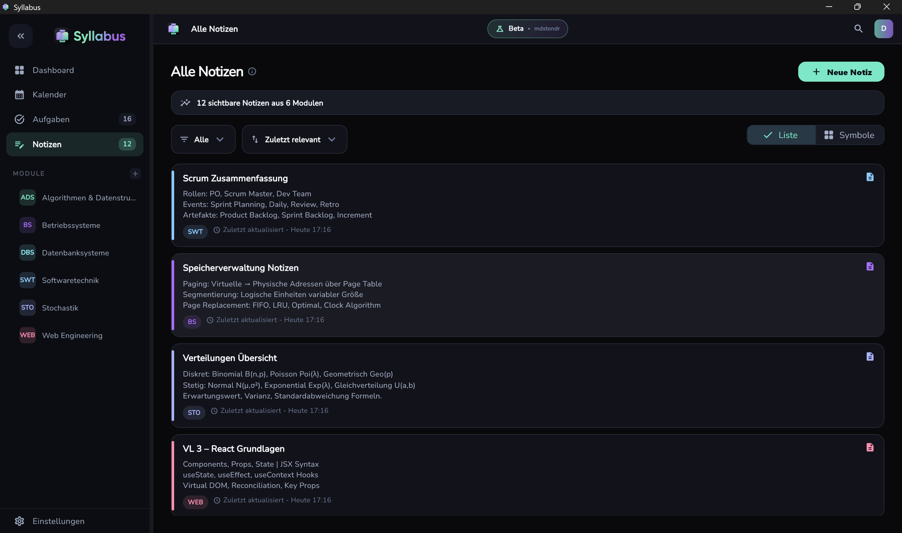
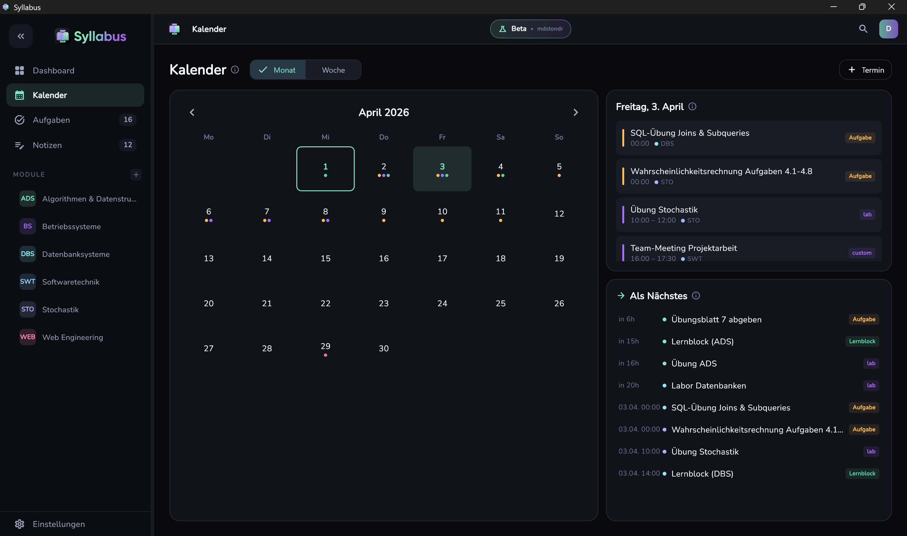
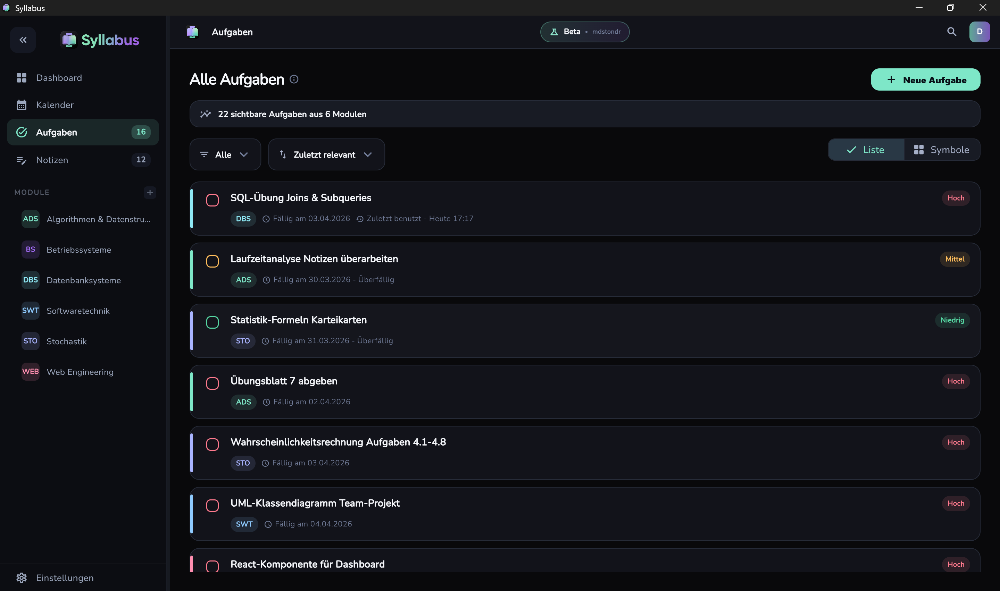

Akt 01
Öffnen und sofort sehen, was zählt.
Das Dashboard zeigt dir offene Aufgaben, wichtige Fristen und deinen nächsten sinnvollen Einstieg auf einen Blick.

Syllabus bündelt Aufgaben, Notizen, Deadlines und Lernplanung in einer Desktop-App für Studierende, damit du schneller ins Arbeiten kommst.
Warum Syllabus
Aufgaben in einer App, Deadlines im Kalender, Notizen in Dokumenten, Dateien in Ordnern. Syllabus zieht alles in einen einzigen Arbeitsbereich und macht aus verstreuten Infos einen klaren nächsten Schritt.
Akt 01
Das Dashboard zeigt dir offene Aufgaben, wichtige Fristen und deinen nächsten sinnvollen Einstieg auf einen Blick.

Akt 02
Notizen, Dateien und Aufgaben leben im selben Arbeitsbereich. Kein Tab-Wechsel. Kein Kontextverlust.


Akt 03
Deadlines, Kalender und Fokuszeiten greifen direkt ineinander, damit Planung nicht extra Aufwand wird.


Im Produkt
Jeder Bereich gibt dir schneller Orientierung, hält den Kontext zusammen und reduziert Reibung im Alltag.
Dashboard
Offene Aufgaben, Fristen und Fokuszeit landen in einer Ansicht. Du weißt in Sekunden, wo du anfangen solltest.
Windows Beta
Syllabus ist für Studierende gebaut, die weniger verwalten und mehr vorankommen wollen. Wenn du dein Studium endlich in einer klaren Oberfläche steuern willst, ist das dein Einstieg.
Der Zugang ist aktuell nur auf Einladung verfügbar.
Syllabus ist Vorabsoftware. Funktionen können sich ändern, unvollständig sein oder zeitweise nicht wie erwartet arbeiten. Du nutzt die Beta eigenverantwortlich und nicht als einziges System für kritische Fristen, Dateien oder Studienorganisation. Für die Beta können wir, soweit gesetzlich zulässig, keine Gewähr für Fehlerfreiheit, Verfügbarkeit oder bestimmte Ergebnisse übernehmen.
Installiere Builds nur aus offiziellen Quellen. Vor Updates und neuen Testversionen empfehlen wir Sicherungen deiner relevanten Daten. Soweit in der Beta nicht anders gekennzeichnet, verarbeitet Syllabus deine Daten lokal auf deinem Gerät.